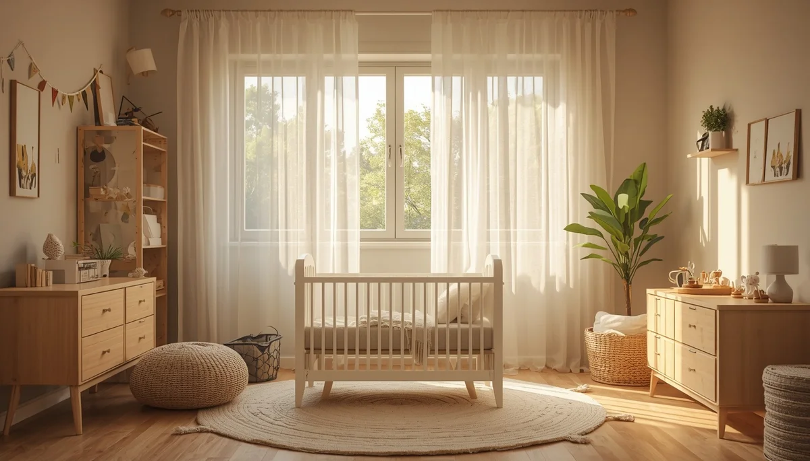

Cuidados y entorno adecuado
El espacio físico donde el niño transita la fiebre juega un papel muy relevante en su comodidad general. Acondicionar la estancia de forma respetuosa ayuda a disipar el exceso de calor corporal sin someter al organismo a contrastes térmicos bruscos o a la aplicación de medidas caseras desaconsejadas por la evidencia médica actual.
Evitar el exceso de abrigo y mantener una ventilación idónea
Es un error común abrigar en exceso al menor con mantas pesadas o múltiples capas de ropa bajo la falsa creencia de que así se expulsará el calor. Lo adecuado es vestirle con prendas ligeras de algodón y mantener la habitación debidamente ventilada a una temperatura agradable, facilitando que el cuerpo disipe el calor de manera natural.
"Un ambiente ventilado, ropa ligera y la calma en el hogar crean el refugio perfecto para que el cuerpo recupere su equilibrio."
Mitos sobre baños de agua fría y paños helados
Someter al niño a baños de agua helada o aplicar compresas muy frías genera un estrés térmico intenso que suele desencadenar temblores y elevar todavía más la temperatura interna por reacción defensiva del organismo. Si se desea emplear paños húmedos, estos deben encontrarse a temperatura ambiente y aplicarse exclusivamente como un gesto de acompañamiento reconfortante.
Creación de un espacio de calma que reduzca la ansiedad
Mantener un tono de voz sosegado, evitar visitas innecesarias y reducir los estímulos lumínicos estridentes en la habitación contribuyen de forma decisiva a que el sistema nervioso del niño descanse con plenitud. Un entorno físico y emocionalmente ordenado favorece una convalecencia más rápida, segura y apacible para toda la familia.
➔ Volver al índice de manejo de la fiebre